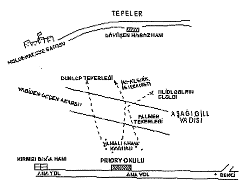

Baker Sokağındaki küçük evimizde dramatik pek çok giriş çıkışlar yaşanmıştır, ama Thorneycroft Huxtable M.A.,[18] Ph. D.[19] vesairenin odamıza girişinden daha ani ve şaşırtıcı hiçbir bir şey hatırlayamıyorum. Akademik başarılarının yükünü taşıyamayacak kadar küçük görünen kartviziti, kendisi odaya girmeden ancak birkaç saniye önce gelebilmişti -o kadar kocaman, o kadar gösterişli, o kadar asildi ki güven ve sağlam kişilik konusunda kusursuz bir örnek olduğu izlenimini uyandırıyordu insanda. Buna rağmen kapıyı bir kez kapattığında yaptığı ilk şey sendeleyerek masaya yaslanmaktı ve sonra da kendini tutamayıp yere yığıldı. Yere sermiş olduğumuz ayı postunun üzerinde baygın bir halde öylece yatıyordu önümüzde.
Hemen ayağa fırlamıştık, ama yine de birkaç saniye boyunca, şaşkın bir halde, hayat denen okyanusta bir fırtınanın kopmuş olduğunu gösteren bu insan enkazına sessizlik içinde bakakaldık. Holmes sonunda aklını başına toparlayıp adam için bir yastık kaparken ben de onu kendine getirmesi için biraz brendi getirdim. Adamın bembeyaz yüzü endişeyle çarpılmıştı. Gözlerinin altındaki torbalar kurşuni bir renge sahip, dudakları renklerini kaybetmişti ve sakallarından anlaşıldığı üzere de günlerdir tıraş olmamıştı. Gömleğinin yakası ve kollarına uzun bir yolculuğun kiri yapışmıştı ve saçları da taranmamış bir karmaşaydı. Önümüzde yatan adam acınacak bir haldeydi.
"Nesi var Watson?" diye sordu Holmes.
"Bitkin düşmüş -açlık ve yorgunluktan olma olasılığı büyük," diye cevap verdim, güçsüz nabzını yoklarken.
"Kuzey İngiltere'deki Mackelton'dan alınmış bir dönüş bileti," dedi Holmes, bileti adamın saat cebinden çıkararak. "Saat henüz on iki bile değil. Erken yola çıkmış olduğu kesin."
Kırışıklarla dolu gözkapakları oynamaya başladı ve çok geçmeden gri gözleri dalgınlıkla bize bakmaya başlamıştı. Yüzü utançtan kıpkırmızı kesilmiş bir halde hemen ayağa fırladı.
"Zayıflığımı bağışlayın Bay Holmes; son günlerde sinirlerim oldukça yıprandı. Teşekkür ederim, bir bardak süt ve birkaç bisküvi alabilirsem kısa sürede kendime geleceğimden eminim. Bizzat gelmek zorundaydım, Bay Holmes, benimle beraber dönmenizi garantilemek için. Göndereceğim bir telgrafın, vakanın, acilliği konusunda sizi ikna edemeyeceğinden korktum."
"Kendinizi biraz daha iyi hissettiğinizde..."
"O, artık gayet iyiyim. Nasıl oldu da bu kadar zayıfladığımı anlayamıyorum doğrusu. Bay Holmes, benimle beraber bundan sonraki trenle Mackleton'a gelmenizi istiyorum."
Dostum hayır anlamında kafasını salladı.
"Arkadaşım Dr. Watson şu aralar çok meşgul olduğumuzu doğrulayabilir. Ben Ferrers Belgeleriyle ilgili vakayla uğraşıyorum, üstelik Abergavenny cinayetinin duruşması da yakınlaşıyor. Ancak ve ancak çok önemli bir vaka uzaklaştırabilir beni bu aralar Londra'dan."
"Önemli mi!" Ziyaretçimiz ellerini havaya kaldırdı. "Holdernesse Dükünün tek oğlunun kaçırılmasıyla ilgili hiçbir şey duymadınız mı siz?"
"Ne! Eski Bakanlar Kurulu Başkanını mı söylüyorsunuz?"
"Ta kendisi. Olayı gazetelerden saklamaya çalıştık ama dün akşamki Globe gazetesinde bir takım dedikodular çıkmış. Bunları duymuş olabileceğinizi düşünmüştüm."
Holmes, uzun, ince kolunu hızla uzatıp özel ansiklopedisinin 'H' cildini raftan aldı.
" 'Holdernesse, altıncı Dük, K.G., P.C -alfabenin yarısı! 'Baron Beverley, Carston Kontu'- inanılmaz, bu nasıl bir liste böyle! '1900'den beri Hallamshire'in kıdemli yüzbaşı. 1888 'de Sir Charles Appledore kızı Edith 'le evlendi. Tek çocuğu ve varisi Lord Saltire'dir. Yüz bin dönüm araziye sahip ve Wales'le Lancashire'de madenleri var.
Adres: Carlton House Terrace; Holdernesse Şatosu, Hallam-shire; Carston Kalesi, Bangor, Wales.
1872'de Deniz Kuvvetleri Kumandanlığı; Dışişleri Bakanı
"Vay, vay, vay, ülkemizin en önemli adamlarından biri olmalı!"
"En önemlisi -büyük ihtimalle de en zengini. Bay Holmes, profesyonel olarak çok başarılı olduğunuzun ve birçok defa sadece iş için iş yaptığınızı biliyorum. Ama size şu kadarını söyleyebilirim ki, Dük, oğlunun yerini bulan adama verilmek üzere beş bin sterlinlik, onu kaçıran adamın ya da adamlarının isimlerini söyleyebilene de fazladan, bin olmak üzere iki çeki çoktan hazırladı."
"Gerçekten de krallara layık bir teklif," dedi Holmes. "Watson, sanırım Kuzey İngiltere yolculuğunda Dr. Huxtable'a katılacağız. Evet, Dr. Huxtable, madem sütünüzü bitirdiniz, lütfen olanları sırasıyla anlatın ve Priory okulundan Dr. Thorneycroft Huxtable'ın bu işteki yerinin neresi olduğunu, olaydan üç gün sonra yardımımı almak için -sakallarınızın durumu tarihi veriyor- gelmesinin sebebini açıklamayı da unutmayın."
Ziyaretçimiz sütle bisküvilerini bitirmişti. Olayları anlatmak için oturduğunda gözlerine ışık, yanaklarına da renk gelmişti tekrar.
"Öncelikle, kurucusu ve müdürü olduğum Priory'nin bir hazırlık okulu olduğu konusunda sizi bilgilendirmeliyim. 'Huxtable'ın Horace Işıkları' belki size adımı hatırlatabilir. Priory'nin, kesinlikle İngiltere'deki en seçkin, en iyi hazırlık okulu olduğunu söyleyebilirim. Lord Levestoke, Blackwater Baronu, Sir Cathcart Soames -hepsi de oğullarını benim ellerime teslim etmiştir. Holdernesse Dükü üç hafta öne özel sekreteri Bay James Wilder vasıtasıyla tek oğlu ve varisi on yaşındaki genç Lord Saltire'in benim yanıma geleceğini haber verdiğinde okulumun mümkün olan en üst seviyeye ulaştığını hissettim. O zaman, bunun hayatımdaki en yıkıcı olayın başlangıcı olacağını nereden bilebilirdim ki?
"Çocuk bir Mayısta geldi; bu yaz döneminin başlangıç tarihidir. Son derece hoş bir gençti ve çok geçmeden de bize uyum sağladı. Evinde çok mutlu olmadığını söylemekle saygısızlık edeceğimi sanmıyorum, sonuçta böyle durumlarda bildiğimiz her şeyi anlatmalıyız. Dükün evlilik hayatının pek sakin geçmediği herkesçe bilinen bir 'sırdır' ama bu, iki tarafın karşılıklı olarak anlaşıp boşanması ve Düşesin Güney Fransa'ya yerleşmesiyle sonuçlandı. Bütün bunlar daha yeni yaşandı ve annesinin tarafını tutmuş olan çocuk, annesi Holdernesse Şatosundan ayrıldığından beridir bunalım içinde, amaçsızca geçirmeye başlamış günlerini. Dükün, oğlunu benim yanıma göndermek istemesinin temel sebebi buydu ve oğlu da iki haftada bize bağlanmış, oldukça mutlu görünüyordu.
"En son on üç Mayısta, yani geçen pazartesi gecesi görüldü. Çocuğun odası ikinci katta bulunuyor ve girişi, iki çocuğun kaldığı daha büyük başka bir odadan sağlanıyor. Bahsettiğim çocuklar ne bir şey görmüş ne de bir şey duymuş; genç Saltire'in o yolu kullanmadığını biliyoruz. Penceresi açık duruyordu ve hemen dışında yetişmiş olan sağlam bir sarmâşık da kaçış için elverişli bir merdiven görevi üstlenmiş -aşağıda herhangi bir ayak izine rastlayamadık, ama çocuğun ancak ve ancak oradan çıkmış olması mümkün.
"Yokluğu salı sabahı fark edildi. Yatağında uyumuş, gitmeden önce de siyah ceket ve koyu gri pantolondan oluşan okul formasını giymiş. Odaya birilerinin girmiş olduğunu gösterecek herhangi bir işaret yoktu. Herhangi bir mücadelenin yaşandığını, çığlık atıldığını da zannetmiyoruz çünkü Caunter'ın, bitişik odada kalan büyük çocuğun uykusu çok hafiftir ve öyle bir şeyi mutlaka duyardı.
"Lord Saltire'in kayboluşu fark edilir edilmez okulda bulunan herkesi, çocukları, öğretmenleri, çalışanları, derhal yanıma çağırdım. Lord Saltire'in yalnız başına kaybolmadığı işte o zaman ortaya çıktı. Heidegger, Almanca Öğretmenimiz de kayıptı. Odası binanın öbür ucunda, ikinci katta bulunuyor ve Lord Saltire'ınkiyle aynı yöne bakıyor. O da yatağında uyumuş; ama gömleği ve çoraplarını odasında yerde bulunca yarım yamalak giyinip çıkmış olması gerektiğine karar verdik. Sarmâşıkların vasıtasıyla aşağı inmiş olduğu gayet açık, zira indiği yerdeki çimenlikte ayak izlerini görmek hâlâ mümkün. Bu küçük bahçenin hemen yanındaki küçük bir kulübede adamın bisikleti dururdu, ama o da aynı şekilde kaybolmuştu.
"Mükemmel referanslara sahip bu öğretmen tam iki yıldır benim yanımda çalışıyor, ama sessiz, asık suratlı bir insandı ve diğer öğretmenlerin, çocukların arasında pek sevilmezdi. Neyse, iki kaçağımız da arkalarında tek bir iz bırakmadan öylece gitmişti işte ve şimdi, bu perşembe sabahında, hâlâ salı günü olduğumuz kadar şaşkınız. Pek tabii ki bir saniye gecikmeden Holdernesse Şatosuna haber gönderdik. Bizden sadece birkaç kilometre uzakta ve çocuğun birdenbire evini özleyip de babasına dönmüş olabileceğini düşündük; ama hayır, ondan hiçbir haber alınmamıştı. Dük altüst olmuş durumda -bana gelince, üzerimdeki baskının ve hissettiğim sorumluluğumun sinirlerime ne hale getirmiş olduğunu kendi gözlerinizle de gördünüz. Bay Holmes, eğer tüm güçlerinizi kullandığınız vakalar oluyorsa şimdi de hepsini devreye sokmanız için size yalvarıyorum; üstün yeteneklerinize bundan fazla ihtiyaç duyan bir vaka görmüş olamazsınız daha önce."
Sherlock Holmes, mutsuz okul müdürünün anlattığı hikâyeyi büyük bir dikkatle dinlemişti. Çatılmış kaşları ve aralarında belirmiş olan çizgiler, karmâşık ve olağandışı her şeye karşı hissettiği merakına hitap eden bu davaya konsantre olması için ayrı bir teşvike ihtiyaç duymadığını gösteriyordu. Defterini çıkarıp bir iki noktayı not aldı.
"Daha önce gelmemekle çok büyük hata etmişsiniz," dedi ciddiyetle. "Araştırmama çok önemli bir handikapla başlayacağım. Bahsettiğiniz sarmaşığın ve çimenliğin profesyonel bir göze anlatabileceklerini tahmin bile edemezsiniz."
"Bu konuda bir suçum yok Bay Holmes. Dük, olayın duyulup da bir skandala dönüşmemesi için çok uğraştı. Ailesinin mutsuzluğunun öğrenilmesini istemiyordu. Öyle şeylerden çok korkar."
"Ama resmi bir araştırma yürütülmüş olmalı, yanılıyor muyum?"
"Evet efendim, ama tam bir hayal kırıklığıydı. Bir ipucu hemen bulundu. Genç bir adam ve bir çocuk, okulun yakınlardaki bir tren istasyonundan trene binerken görülmüştü. Ne var ki dün gece ikisinin Liverpool'da yakalanmış olduğu, vakamızla hiçbir alakalarının olmadığı haberini aldık. İşte böylece, çaresizlik ve hayal kırıklığı içinde uykusuz geçen bir geceden sonra ilk trenle size geldim."
"Bu yanlış ipucunun peşinden gittiklerinden yerel araştırma gevşemiş olmalı, değil mi?"
"Tamamen bırakıldığı bile söylenebilir."
"Böylece üç gün boşa harcanmış. Böylesine önemli bir olayda son derece sorumsuz bir davranış."
"Üzülerek bunu kabul etmek zorundayım."
"Fakat problem yine de bir çözüme kavuşmalı. Bu vakayı üstlenmek beni mutlu edecektir. Kayıp çocuk ve şu Almanca öğretmeni arasında bir bağ bulabildiniz mi?"
"Hayır, hiçbir şekilde bulamadık."
"Çocuk o öğretmenin derslerini alıyor muydu?"
"Hayır; bildiğim kadarıyla ikisi bir araya gelip tek bir kelime bile etmiş değildir."
"Bakın bu gerçekten çok tuhaf. Peki çocuğun bir bisikleti var mıydı?"
"Hayır."
"Başka kimsenin bisikleti kayıp mıydı peki?"
"Hayır."
"Emin misiniz?"
"Pek tabii."
"Pekâlâ, ama öğretmenin çocuğu kucağında taşıyarak gecenin bir yarısında bisikletine atlayıp gittiğini düşünmüyorsunuzdur herhalde?"
"Tabii ki hayır."
"O halde teoriniz nedir?"
"Bisiklet bir kandırmaca olabilir. Belki onu bir yerlere saklayıp birlikte yürüyerek gittiler."
"Mümkün tabii; ama oldukça garip bir kandırmaca olurdu, değil mi? Sözünü ettiğiniz kulübede başka bisikletler vardı, değil mi?"
"Bir sürü vardı."
"Bisikletle gidilmiş olduğu izlenimini uyandırmak isteyen birinin, bu durumda iki tane bisiklet saklamış olması gerekmez miydi sizce?"
"Herhalde öyle yapardı."
"Tabii ki öyle yapardı. Kandırmaca teorisi işe yaramaz. Ama bisiklet yine de bir araştırma için mükemmel bir başlangıç noktası sayılabilir. Bir bisikleti saklamak ya da ortadan yok etmek kolay değil sonuçta. Son bir soru. Kaybolmadan önceki gün çocuğu görmeye gelen biriler oldu mu?"
"Hayır."
"Peki hiç mektup aldı mı?"
"Evet; bir mektup gelmişti."
"Kimden?"
"Babasından."
"Çocukların mektuplarını açıyor musunuz?"
"Hayır."
"Peki, babasından geldiğini nereden biliyorsunuz öyleyse?"
"Zarfın üzerinde armaları vardı ve üzerindeki adres Dükün el yazısıyla yazılmıştı. Hem sonra Dük yazmış olduğunu da hatırlıyor."
"Çocuk ondan önce en son ne zaman mektup aldı?"
"Üstünden en azından bir hafta geçmişti."
"Fransa'dan hiç gelmiş miydi mektup?"
"Hayır; hiç gelmedi."
"Sorularımın nedenini anlıyorsunuzdur kuşkusuz. Çocuk ya zorla götürüldü ya da kendi isteğiyle yola çıktı. Çocuğun yaşının küçük olması nedeniyle ikinci durum söz konusu olduğunda, dış dünyadan gelen bir şeylerin buna sebep olmasını beklersiniz. Madem hiç ziyaretçisi olmamış, bu teşvikin mektuplar aracıyla gelmiş olması gerekir. Anlayacağınız yazıştığı kişileri öğrenmek gerekiyor."
"Korkarım ki bu konuda size pek yardımcı olamayacağım. Yazıştığını bildiğim tek kişi kendi babasıydı."
"Ve babası da oğlunun kaybolduğu gün yazmıştı. Babayla oğul arasındaki ilişki nasıldı?"
"Dük hazretleri hiç kimseye karşı fazla nazik davranmaz. Ülkesinin sorunlarıyla çok meşgul oluyor ve sıradan duygularla ona ulaşmak neredeyse imkânsız. Yine de kendi şeklinde çocuğa karşı her zaman iyiydi."
"Buna rağmen çocuk annesinin tarafını tutmuştu."
"Evet."
"Bunu size kendisi mi söyledi?"
"Hayır."
"O halde Dük mü söyledi?"
"Oh, hayır; olur mu hiç öyle şey!"
"O halde nereden biliyorsunuz?"
"Dük hazretlerinin sekreteri, Bay James Wilder'la biraz konuştum. Lord Saltire'in duyguları konusunda bana bilgi veren oydu."
"Anlıyorum. Hah, bu arada, Dükün göndermiş olduğu şu son mektup -o hâlâ çocuğun odasında mıydı?"
"Hayır; Lord Saltire onu yanına almış olmalı. Evet, bay Holmes, sanırım artık Euston'a doğru yola çıkmamızın zamanı geldi."
"Bir araba çağırtacağım. On beş dakika içinde hizmetinizde olacağız. Bay Huxtable, eve telgraf çekecek olursanız oralardaki insanların, Liverpool'daki araştırmanın -ya da polisler olayı her nereye sürüklediyse oradaki- hâlâ sürdüğünü düşünmeleri çok iyi olur. Bu sırada biz de sizin oralarda sessizce çalışabiliriz. Belki izler henüz Watson ve benim gibi iki yaşlı köpeğin koku alamayacağı kadar soğumamıştır daha."
O akşam Dr. Huxtable'ın ünlü okulunun kurulmuş olduğu Peak'in insanı canlandıran soğuğunda bulduk kendimizi. Yolculuğumuzun sonuna geldiğimizde karanlık çökmüştü bile. Holdeki sehpanın üzerinde bir kartvizit vardı ve uşak, efendisinin kulağına bir şeyler fısıldayınca kendisi heyecandan titreyerek bize döndü.
"Dük burada," dedi. "Dük ve Bay Wilder çalışma odasındalar. Hadi baylar, gelin de sizi tanıştırayım."
Pek tabii ki ünlü devlet adamını daha önce görmüş olduğum resimlerinden tanıyordum, ama adam yine de basına yansıdığından çok farklıydı. Uzun boylu, soylu biriydi; yorgun, sıska bir yüz ve uzun kıvrımlı bir burnu vardı ve giyimine çok önem verdiği açıkça görülüyordu. Yüzünde renk olmayıp teni ölüleri hatırlatıyordu ve bu görüntü kenarında saatinin zincirinin gözüktüğü beyaz ceketine uzanan kızıl sakalı sayesinde daha da bir vurgulanmıştı. Hemen yanında, özel sekreteri Bay Wilder olması gereken çok genç bir adam duruyordu. Zeki, parlak mavi gözleri ve ciddi bir yüz ifadesi olan kısa boylu, ürkek, heyecanlı bir adamdı. Odaya girdiğimiz anda keskin ve kendine güvenli bir tonda konuşmaya başlayan oydu.
"Bu sabah size uğradım, Dr. Huxtable, ama ne yazık ki Londra'ya gitmenizi engellemek için geç kalmışım. Amacınızın, vakayı incelemesi için Bay Sherlock Holmes'u buraya çağırmak olduğunu öğrendim. Dük hazretleri, kendisine danışmadan böyle bir adımı atmayı uygun gördüğünüz için son derece sinirli."
"Polisin başarısız olduğunu öğrendiğimde..."
"Dük hazretleri polisin başarısız olduğu konusunda emin değil."
"Fakat, siz de biliyorsunuz ki Bay Wilder..."
"Eminim farkındasınızdır ki Dr. Huxtable, Dük hazretleri bir skandalın çıkması konusunda çok endişeleniyor. Mümkün olduğu kadar az insanı karıştırmak istiyor olaya."
"Mesele kolaylıkla çözülebilir," dedi yıldırılmış olan doktor; "Bay Sherlock Holmes sabah treniyle Londra'ya dönebilir."
"Hiç sanmıyorum, Doktor, hiç sanmıyorum," dedi Holmes en umarsız sesiyle. "Kuzey havasında insanı canlandıran hoş bir şey var. Birkaç günümü sizin kırlarda geçirmek ve aklımı da ilginç bir şeylerle meşgul etmek niyetindeyim. Burada kaldığım sürece sizin yanınızda kalıp kalmayacağıma tabii ki sizin karar vermeniz gerekecek; kasabada bir han bulabileceğimden eminim."
Baskı altındaki doktorun çok büyük bir kararsızlık içinde olduğunu görebiliyordum, ama kızıl sakallı Dükün kalın, gür sesi onu bu dertten kurtardı.
"Bana danışmakla akıllılık etmiş olacağınız konusunda Bay Wilder'e katılıyorum, Dr. Huxtable. Fakat Bay Holmes zaten her şeyi öğrenmiş olduğuna göre onun yeteneklerinden yararlanmamak büyük bir aptallık olur. Bir handa kalmanız söz konusu bile olamaz, Bay Holmes, benimle gelip Holdernesse Şatosunda kalmayı kabul etmenizden onur duyardım."
"Dük hazretlerine teşekkür ederim. Ama araştırmamı göz önüne alarak olayın gerçekleştiği sahnede kalmamın daha akıllıca olacağı kanısındayım."
"Nasıl isterseniz Bay Holmes. Bay Wilder'a ya da bana sormak istediğiniz herhangi bir şey varsa hiç çekinmeden söyleyin. Elimizden gelen her şeyi yapacağız."
"Büyük bir ihtimalle sizi malikânede görmem gerekecek," dedi Holmes. "Fakat şimdilik sadece şunu sormak istiyorum efendim; oğlunuzun esrarengiz kayboluşuyla ilgili bir teori oluşturdunuz mu acaba?"
"Hayır efendim, oluşturmadım."
"Bu soru size acı verecekse şimdiden özür dilerim, fakat başka çarem yok. Düşesin bu olayda bir parmağı olduğunu düşünüyor musunuz?"
Bakanın yüzünde belirgin bir tereddüt belirmişti.
"Zannetmiyorum," dedi sonunda.
"Akla uygun gelen ikinci açıklama, çocuğun bir fidye istemiyle kaçırılmış olduğudur. O türden bir istek ulaştı mı size acaba?"
"Hayır, efendim."
"Son bir soru daha, Dük hazretleri. Bu olayın gerçekleştiği gün oğlunuza bir mektup yazmışsınız, bu doğru mu?"
"Hayır; mektubu bir önceki gün yazmıştım."
"Kesinlikle. Ama oğlunuzun eline o gün geçti, değil mi?"
"Evet."
"Mektubunuzda, çocuğun dengesini bozmuş olabilecek, öyle bir adım atmasını sağlayacak bir şeyler var mıydı peki?"
"Hayır, efendim, kesinlikle yoktu."
"O mektubu bizzat mı postaya verdiniz?"
Aristokrat cevap veremeden, biraz sinirlenmiş görünen sekreteri araya girdi.
"Dük hazretleri mektuplarını kendi postalamaz efendim," dedi. "Söz konusu mektup, başkalarıyla beraber çalışma masasının üzerine bırakılmıştı ve ben de onları bir posta çuvalına koydum."
"Bahsedilen mektubun onların arasında olduğundan emin misiniz?"
"Evet; onu görmüştüm."
"O gün kaç tane mektup yazmıştınız Dük hazretleri?"
"Yirmi ya da otuz tane kadar. Birçok kişiyle mektuplaşıyorum. Fakat bunun konumuzla ne ilgisi var?"
"İlgisiz değil," diye cevap verdi Holmes.
"Neyse, neyse," diye devam etti Dük, "polisi Güney Fransa'ya yönelttim. Düşesin böylesine canavarca bir olaya karışmış olacağına inanmadığımı zaten söyledim, ama çocuğun kafası bir sürü yanlış fikirle doluydu ve onun, şu Almanın da yardımıyla annesinin yanına kaçmış olması olası. Evet, Dr. Huxtable, sanırım biz artık Holdernesse'e dönüyoruz."
Holmes'ün sormak istediği başka sorularının olduğunu görebiliyordum; ama asilzade kesin bir şekilde sohbeti bitirmişti. Ailesiyle ilgili sorunları bir yabancıyla konuşmanın, onun aristokrat tabiatına çok ters düştüğü, gelen her yeni sorunun düklük hayatının saklı kalmış sırlarını ortaya çıkaracağından korktuğu çok belliydi.
Dük ve sekreteri gittiğinde, Holmes her zamanki tez canlılığıyla hemen araştırmayı başlattı.
Çocuğun odası dikkatlice arandı ama kaçışın ancak pencereden gerçekleşmiş olduğunun kesinleşmesinden başka herhangi bir şey çıkmadı. Alman öğretmenin odası ve eşyaları da yeni bir ipucu sağlamadı. Sarmâşıklardan biri, adamın ağırlığından kopmuş ve bir fenerin ışığıyla, aşağıya indiğinde çimenlikte bırakmış olduğu topuk izlerini gördük. Kısa, yeşil çimenlerin arasındaki bu izler, gece gerçekleşen anlaşılmaz kaçışa tanıklık eden tek şeydi.
Sherlock Holmes evdeki araştırmayı bitirdiğinde yalnız başına evden ayrıldı ve ancak saat on birden sonra döndü. Civar bölgeyi gösteren büyük bir harita bulmuştu ve bunu odama getirerek yatağa yaydı. Lambayı da tam ortasına oturttuktan sonra piposunu yaktı ve arada bir, bir takım yerleri bana göstermek için duman tüten ucunu kullanarak uzun süre boyunca haritayı inceledi.
"Bu vaka giderek daha hoşuma gidiyor Watson," diye konuştu. "Gerçekten de çok ilginç birkaç noktası var. Daha yeni başladıysak da araştırmamızda faydalı olabilecek bir takım coğrafi öğeleri tanımanı istiyorum.
"Haritaya bak. Buradaki koyu renkli kare Priory okuludur. Oraya bir iğne koyacağım. Şimdi, buradaki çizgi ana yolu gösteriyor. Doğusundan ve batısından okulun yanından geçtiğini ve her iki yönde de bir mil boyunca herhangi bir yan yolunun olmadığını görüyorsun. Bu iki insan bir yol kullandılarsa giderlerken, o yol kesinlikle buydu."
"Evet."

"Şansımıza, söz konusu gecede bu yolda meydana gelen şeyleri bir yere kadar takip edebiliyoruz. Şu noktada, pipomun ucunun gösterdiği noktada, bir bekçi görevliydi: saat on ikiden altıya kadar. Doğu istikametinde bulunan ilk kavşak bu. Adam, bir an için bile görev yerinden ayrılmadığını ve bir çocuğun, ya da bir adamın, kendisi görmeden oradan geçmiş olamayacağını söylüyor. Bekçiyle bu gece konuştum ve bana kesinlikle güvenilir biri olduğu izlenimini verdi. Böylece bu taraftan gitmedikleri kesinleşmiş oluyor. Gel gelelim öbür istikamete. Burada bir han var, ev sahibesi hasta yatan, Kırmızı Boğa Hanı. Hasta kadın bir doktorun gelmesi için Mackleton'a haber göndermişti, ama başka bir hastasının yanında olduğu için doktor ancak sabah gelmiş. Handaki diğer kişiler, doktorun gelişini bekleyerek bütün gece ayakta kalmış ve görünüşe göre birileri hep pencereden yola bakmış. Kimsenin geçmediğini söylüyorlar. Güvenilir olduklarını kabul edersek yolun batı yönünü de eleme şansına ermiş oluyoruz, bununla beraber, kaçakların, yolu kullanmadıklarını da söyleyebiliyoruz tabii."
"Fakat bisiklet ne olacak?" diye karşı çıktım.
"Evet. Bisiklete de geleceğiz. Şimdilik yol konusuna devam edelim; yolu kullanmadılarsa okuldan çıktıklarında kuzeye ya da güneye yürümüş olmaları gerek. Buraya kadar her şey tamam. Şimdi hangi yöne gittiklerini bulmaya çalışalım. Evin güneyindeki araziyi, gördüğün gibi ekilebilir topraklar kaplıyor. Buraları, aralarına taş duvarların dikilmiş küçük tarlalarla kaplı ve bir bisiklet için hiç de elverişli bir yol değil. Burayı da eleyebiliriz. O halde kuzeydeki araziye geliyoruz. Tam şurada, 'Yamalı Shaw' olarak adlandırılmış bir ağaç korusu var ve onun ötesindeki on millik alanda da Aşağı Gill Vadisi uzanıyor. Bu ıssız bölgenin bir tarafında, tam şurada, Holdernesse Şatosu bulunuyor. Yolu takip ettiğinde okuldan on mil uzakta ama araziden geçince sadece altı millik bir yol var aralarında. Vadi, ıssız denebilecek kadar tenha bir yerleşime sahip. Birkaç tane çiftçinin, ineklerini ve koyunlarını barındırdıkları küçük yerleri var. Arazinin bunların haricindeki sakinleri sadece kuşlardır -Chesterfield Caddesine kadar. Bak, orada bir kilise, birkaç ev ve bir han var. Bunların ötesindeyse arazi iyice dikleşiyor, tepeler başlıyor. Araştırmamızın kuzeyde başlaması gerektiği kesin."
"Peki ama ya bisiklet?" diye üsteledim.
"Tamam, tamam!" dedi Holmes sabırsızca. "İyi bir bisikletçi ana yola ihtiyaç duymaz. Bahsettiğim arazide sayısızca patika bulunuyor ve o gece dolunay vardı. Hey! Bu da kim?"
Biri heyecanla kapıyı çalmıştı ve birden Dr. Huxtable odamızdaydı. Elinde, üzerinde beyaz bir armanın bulunduğu mavi bir kriket kasketi vardı.
"Sonunda bir ipucumuz oldu!" diye bağırdı. "Tanrıya şükürler olsun! Sonunda zavallı çocuğa biraz yaklaşabildik! Bu onun şapkası."
"Nerede bulundu?"
"Kırlarda kamp kuran çingenelerin karavanında. Salı günü buradan ayrılmışlardı ama polis bugün yerlerini bulmuş ve karavanlarında yapılan arama sonucunda da bunu bulmuşlar."
"Peki orada oluşunu nasıl açıklıyorlar?"
"Yalan söylüyorlar -salı sabahı onu kırlarda bulmuş olduklarını iddia ettiler. Çocuğun yerini biliyorlar o serseriler! Tanrıya şükürler olsun ki şimdi hepsi kilit altında. Ya kanunlar ya da Dükün para kesesi onları konuşturacaktır."
"Buraya kadar gayet iyi," dedi Holmes, doktor sonunda odadan ayrıldığında. "En azından sonuç almayı bekleyebileceğimiz yerin gerçekten de Aşağı Gill Vadisinin o tarafları olduğuna dair teorimiz doğrulanmış oldu. Polis aslında pek bir şey yapmadı, tabii o çingeneleri tutuklamak dışında. Şuraya bak Watson! Vadinin ortasında bir akarsu yatağı var. Haritada işaretlenmiş. Bazı yerlerde bir bataklık oluşturacak kadar genişliyor. Özellikle de okulla Holdernesse Şatosunun ortasındaki bölgede öyle. Böylesine kuru bir havada herhangi bir yerde iz aramak boşunadır; ama şu noktada bir takım izlerin kalmış olması mümkün. Seni yarın sabah çağıracağım, beraberce gidip bu olayın üzerindeki esrar perdesini kaldırıp kaldıramayacağımıza bakarız."
Holmes'ün uzun, zayıf şeklinin yatağımın yanında olduğunu görerek uyandığımda güneş daha yeni yeni doğuyordu. Holmes tam takım giyinmiş, görünüşe göre çoktan dışarı çıkıp gelmişti bile.
"Bisiklet kulübesini ve çimenliği araştırdım," dedi. "Yamalı Shaw'a da gittim. Hadi bakalım Watson, yan odada seni sütlü kakao bekliyor. Acele etmeni istemek zorundayım, çünkü önümüzde harika bir gün var."
Holmes'ün gözleri parıldıyor, yanakları, işinin hazır olduğunu gören büyük ustanın heyecanıyla sağlıklı kırmızı bir renge bürünmüştü. Bu aktif, heyecanlı adam, Baker Sokağındaki içe bakışçı, solgun hayalci Holmes'tan çok farklıydı. Heyecanlı bir enerjiyle canlanmış çevik şekline bakarken önümüzde gerçekten de yorucu bir gün yattığını hissedebiliyordum.
Ne var ki günün başlangıcı tam bir hayal kırıklığıydı. Büyük umutlarla, binlerce koyun patikası barındıran turbalıktı vadiyi arşınlayıp Holdernesse Şatosunun yakınındaki bataklığa vardık. Çocuk eve gitmiş olsa buradan geçmiş olması gerekirdi ve bir iz bırakmadan da buradan geçmek imkânsızdı. Dostum, bütün yosunlu yüzeylerindeki çamur izlerine dikkat ederek gittikçe kararan bir yüzle bataklığın sınırında ilerledi. Koyunlar bol bol iz bırakmıştı ve birkaç mil aşağıda inek izleri de bulduk ama başka bir şey yoktu.
"Bir numarayı silebiliriz," dedi Holmes, etrafımızdaki kırların yayıldığı geniş alana kasvetle bakarak. "Şu ötede ikinci bir bataklık ve arada da ince bir akarsu yatağı var. Hey! Hey! Hey! Bu da ne?"
Küçük, dar bir patika çıkmıştı karşımıza. Nemli toprağı sayesinde iyice belirginleşmiş bir halde, bir bisiklet tekerleğinin izi görünüyordu ortasında.
"Yaşasın!" diye bağırdım. "Onu bulduk!"
Ama Holmes başını hayır anlamında sallarken neşeli olmaktan çok, şaşırmış görünüyordu.
"Bir bisiklet izi olduğu kesin, ama bizim aradığımızınki değil," dedi. "Tekerleklerin bıraktıkları izlerin kırk iki çeşidini bilirim ben. Gördüğün gibi, bu dış tarafında bir çizgiye sahip bir Dunlop'tur. Heidegger'in tekerlekleri Palmers markaydı ki bunlar uzunlamasına çizgi izleri bırakır. Okulun matematik öğretmeni Aveling bu konuda emin olduğunu ifade etti. Kısacası, Heidegger'in bisikletinin izi olmadığını söyleyebiliriz."
"O halde çocuğun mu?"
"Olabilir, tabii bir bisikleti olduğunu ispatlayabilmiş olsaydık. Ancak bu konuda ne yazık ki başarısız olduk. Buradaki iz, gördüğün gibi okul istikametinden gelen bir sürücü tarafından bırakılmış."
"Ya da okul istikametinde ilerleyen biri tarafından -değil mi?"
"Hayır, hayır, sevgili Watson. Daha derin bir iz bırakan tekerlek her zaman arka tekerleğidir, çünkü tüm yük ona biner. Birçok yerde ön tekerleğinin izinin üzerinden geçerek onu silmiş olduğunu görebilirsin. Bisikletin okuldan uzaklaşarak ilerlediğine kuşku yok. Araştırmamızla alâkalı da olabilir alâkasız da, ama daha fazla ilerlemeden önce izi geriye doğru takip edeceğiz."
Öyle yaptık, ancak birkaç yüz metre ilerledikten sonra arazinin nemli topraklarından çıktığımız için izleri kaybettik. Vazgeçmeyerek patikayı geriye doğru takip etmeye devam ettik ve küçük bir pınarın patikanın üzerinde aktığı bir noktaya vardık. Burada yine karşımıza çıktı bisikletin izi, ama ineklerin bıraktıkları izlerle neredeyse mahvolmuş bir haldeydi. Onun ötesinde başka bir ize rastlayamadıysak da gördüğümüz son iz doğrudan Yamalı Shaw'a, okulun, arkasında kalan koruluğa bakıyordu. Bisikletin oradan çıkmış olması gerekiyordu. Holmes çenesini eline dayayarak büyük bir taşın üzerine oturdu. Bir daha hareket ettiğinde iki tane sigara içmiştim.
"Evet," dedi sonunda. "Kurnaz bir adamın, değişik bir iz bırakmak için bisikletinin tekerleklerini değiştirmesi mümkün tabii. O kadar akıllı olan bir suçluyla çalışmak beni onurlandırır doğrusu. Neyse, bu soruyu böylece bırakıp bataklığımıza geri döneceğiz, çünkü daha aramadığımız bir dolu yer var."
Bataklığın nemli topraklarının sınırındaki sistematik araştırmamızı devam ettirdik ve çok geçmeden çalışmamızın karşılığını aldık. Bataklığın alçak kısmının ortasından çamurlu bir patika uzanıyordu ve ona yaklaştığımızda Holmes neşeli bir çığlık attı. Patikanın ortasından telgraf tellerini andıran güzel bir iz geçiyordu. Aradığımız Palmer tekerleğinin iziydi bu.
"İşte bay Heidegger'i bulduk!" diye haykırdı Holmes heyecanla. "Mantık yürütme yöntemimin oldukça başarılı olduğu ortaya çıktı Watson."
"Seni kutlarım."
"Ama hâlâ uzun bir yol var önümüzde. Patikanın kenarından yürümeni isteyeceğim. Şimdi izi takip edelim. Korkarım fazla ilerlemeyecek."
Ne var ki ilerledikçe, vadinin bu bölümünün birçok yerinde yumuşak, nemli toprakların bulunduğu bölgeler keşfettik ve peşinde olduğumuz iz zaman zaman gözden kaybolsa da onu hep yeniden buluyorduk.
"Farkında mısın Watson," dedi Holmes, "sürücü şu durumda iyice hızlanmış durumda. Buna hiç kuşku yok. İki tekerleğin de izlerinin net olduğu şu ize bak. Her iki iz de aynı derinlikte. Bunun bir tek anlamı olabilir, o da mümkün olduğu kadar hızlanmak isteyen birinin yaptığı gibi, bütün ağrılığını gidona verdiğidir. Aman tanrım! Adam düşmüş!"
Patikanın yanındaki kuru araziye düzensiz bir şekilde çamur sıçramıştı. Arkasından ayak izleri göründü, sonra tekerlek izleri tekrar başladı.
"Çamurda kaymış olabilir," diye önerdim.
Holmes, kırılmış bir karaçalı dalını kaldırıp bana doğru uzattı. Dehşetle irkilerek küçük sarı çiçeklerinin hepsinin kırmızıya bulanmış olduğunu gördüm. Patikada da, kenarlardaki çimenlerin arasında da kuru kan lekeleri gözüküyordu.
"Kötü!" dedi Holmes. "Çok kötü! Watson, hemen kenara çekil! Gereksiz tek bir ayak izi olmasın şimdi! Evet, bakalım neler olmuş? Yaralı olarak düşmüş, tekrar ayağa kalkmış, bisikletine binmiş ve yola devam etmiş. Fakat başka birinin izi yok burada. Burada yandaki patikada bir inek sürüsü yürümüş. Bir boğanın saldırısına uğramış değildi ya? İmkânsız! Ancak başka birinin varlığına dair herhangi bir iz göremiyorum. Devam etmek zorundayız Watson. Artık tekerlek izlerinin yanı sıra arkasında kan lekeleri de bırakmış olacağına göre, elimizden kaçamaz herhalde."
Uzun süre aramak zorunda kalmadık. Tekerleklerin izleri, ıslak ve kaygan zeminde bir süre sonra deliler gibi eğrilip bükülmeye başladı. İleriye doğru baktığımda, kalın karaçalıların arasında metalin parıltısı çarptı gözüme birden. Bir bisikletti, bir pedalı yamulmuş Palmer tekerlekli bir bisikletti ve ön tarafının tamamı kopkoyu bir kana bulanmıştı. Çalıların diğer tarafında bir ayakkabı görünüyordu. Hemen arka tarafa koştuk ve birdenbire şanssız bisiklet sürücüsüyle karşı karşıya kalmıştık işte. Kalın bir sakalı ve tek camı düşmüş gözlükleri olan uzun boylu bir adamdı. Ölümüne sebep olan şey, başına almış olduğu ve kafatasının bir kısmını ezerek kırmış olan korkunç bir yaraydı. Öyle bir yaraya sahip olduktan sonra bile yola devam etmiş olduğu gerçeği adamın gücü ve cesaretiyle ilgili çok şey anlatıyordu. Ayağında ayakkabı vardı ama çorap giymemişti ve önü açık ceketinin içinde pijaması görünüyordu. Adamın, aradığımız Alman öğretmen olduğundan en ufak bir kuşku yoktu.
Holmes büyük bir saygıyla cesedi çevirerek onu dikkatlice inceledi. Sonra uzunca bir süre derin düşüncelere dalmış halde oturdu, ama çatık kaşlarından anladığım kadarıyla bu korkunç keşif araştırmamızda bizi daha ileri taşımamıştı.
"Ne yapacağımıza karar vermek biraz zor Watson," diye konuştu sonunda. "İçgüdülerim araştırmamıza devam etmemiz gerektiğini söylüyor; şimdiden o kadar çok zaman kaybettik ki boşa harcayacak bir saatimiz yok. Öte yandan şu zavallı adamın cesedini götürsünler diye keşfimizi polisi bildirmek de zorundayız."
"İstersen ben geri dönüp olanları anlatabilirim."
"Ama sana ve yardımına ihtiyacım var. Hey, dur biraz! Şu ötede yer tezeği kesen bir adam var. Onu buraya getir. Polisi o çağırsın."
Köylüyü çalılığa getirdim ve Holmes da korkmuş adama Dr. Huxtable'a götürmesi için bir not verdi.
"Evet, Watson," dedi, "bu sabah iki ipucu bulduk. Biri Palmer tekerlekli bisikletti ki onun nereye gitmiş olduğunu görebiliyoruz. Diğeri de Dunlop tekerlekli bisikletti. O konuyu araştırmaya girişmeden önce gerçekten ne bildiğimizi bir değerlendirip önemli şeyleri önemsizlerinden ayıralım.
"İlk olarak çocuğun kesinlikle kendi isteğiyle kaçtığı fikrini benimsemeni istiyorum. Penceresinden aşağı tırmandı, sonra da ya yalnız ya da biriyle birlikte yola koyuldu. Bu kadarı kesin."
Ona katıldığımı belirttim.
"Pekâlâ, şimdi bu şanssız Almanca öğretmenine dönelim. Çocuk, kaçtığı sırada okul formasını giyinmişti. Bunu göz önüne alarak ne yapacağını bildiğini söyleyebiliriz. Alman ise çorapsız çıkmış dışarı. Çok kısa bir sürede karar verip harekete geçmiş olduğu kesin."
"Evet, buna kuşku yok."
"Peki neden gitti? Tabii ki yatak odasının penceresinden çocuğun kaçtığını görmüştü. Onu yakalayıp geri getirmek istemişti. Bisikletine atladı, çocuğun peşine düştü ve sonuçta da bu kovalamacada hayatını kaybetti."
"Evet, öyle görünüyor."
"Şimdi asıl konuya geliyorum. Küçük bir çocuğu kovalayan bir adamın yapmasını bekleyeceğimiz şey koşarak peşine düşmesidir Alman'ımız öyle yapmıyor. Bisikletini alıyor. Mükemmel bir bisiklet kullanıcısı olduğu da söylendi bu arada. Çocuğun çok hızlı kaçmasını sağlayacak bir şeye sahip olduğunu bilmese bisikletini almazdı."
"Diğer bisikletten bahsediyorsun."
"Sahnemizi oluşturmaya devam edelim. Adam, okuldan üç buçuk kilometre ötede öldürülüyor -dikkatini çekerim, ölümüne sebebiyet veren şey, bir çocuğun ateşlemiş olabileceği bir silah yarası değil, sadece çok güçlü bir kolun indirmiş olabileceği sert bir darbedir. Bu durumda, kaçarken çocuğun yanında gerçekten de birileri vardı. Kaçışın hızlı bir şekilde gerçekleştiğini de, mükemmel bir bisiklet kullanıcısı olmasına rağmen onlara ancak üç buçuk kilometre sonra yetişebildiğinden anlıyoruz. Ne var ki trajik olayın gerçekleştiği sahneyi incelediğimizde birkaç hayvan izinden başka bir şeye rastlayamıyoruz. Geniş bir tur attım ve elli metrelik bir mesafe içinde başka hiçbir iz yok. Başka bir bisikletçinin cinayetin kendisine karışmış olmadığı belli, ama başka bir insanın ayak izine de rastlayamadım."
"Holmes," diye atıldım, "bu imkânsız!"
"Olağanüstü!" diye belirtti Holmes. "Son derece aydınlatıcı bir yorum! Benim anlattıklarıma göre gerçekten de imkânsız; demek ki bir yerde bir yanlış yaptım. Fakat sen de gördün. Nerede hata yapmış olabileceğimize dair bir fikrin var mı?"
"Düşerken kafasını bir yere vurmuş olması mümkün değil miydi?"
"Bir bataklıkta mı Watson?"
"Ne diyeceğimi bilemiyorum, aklımı kaçırabilirim."
"Ah, hiç olur mu; daha kötü vakalar da çözmüşüzdür seninle. Hiç değilse malzeme açısından bayağı zenginiz, tek sorun onları nasıl kullanacağımızı bilemememizdir. Hadi gel. Palmer tekerleğiyle işimiz bittiğine göre Dunlop'un peşine düşelim de bize neler anlatabileceğine bir bakalım."
İzi bulup onu bir süre boyunca takip ettik ama arazi çok geçmeden çimenlerle kaplı bir hal aldı ve bataklık arkamızda kaldı. İzi daha fazla takip edemeyeceğimiz açıktı. Dunlop marka tekerleğinin izini en son gördüğümüz noktaya göre bisikletin ya Holdernesse Şatosuna, bir kilometre kadar ötede solumuzda görünen soylu kulelere ya da Chesterfield Caddesinin yanında kurulmuş olan ve bulunduğumuz yere göre önümüzde kalan küçük, gösterişsiz bir köye gitmiş olması gerekirdi.
Kapısında, horoz dövüşünün yapıldığı bir yer olduğunu anlatan bir işareti bulunan çirkin, uğursuz hana yaklaştığımız sırada Holmes birden inledi ve düşmemek için omzuma yapıştı. İnsanı çaresiz bırakan şu bilek burkulmalardan biriydi onu inletmiş olan. Büyük bir zorlukla, esmer, yaşlıca ve şişman bir adamın oturup pipo içtiği hanın kapısına kadar ilerledi.
"Nasılsınız Bay Reuben Hayes?" diye konuştu Holmes.
"Sen kimsin ve ismimi nereden biliyorsun?" diye cevap verdi köylü, kurnaz gözlerinde şüpheci bir ışık belirirken.
"Ee, başınızın üstündeki plakada yazılı. Evinin efendisi olan bir adamı nerede görsem tanırım. Ahırınızda bir arabaya benzer bir şeyiniz yoktur, değil mi?"
"Hayır; yok."
"Yere basamıyorum."
"O zaman basma."
"Fakat yürüyemiyorum."
"O halde zıpla."
Bay Reuben Hayes'ın tavırları kesinlikle nazik değildi, ama Holmes yine de şaşılacak bir sakinlikle konuşmaya devam etti.
"Baksana şu halime dostum," dedi. "Çaresiz kaldım; hemen devam etmek zorunda olduğum halde. Nasıl olduğu hiç önemli değil benim için."
"Benim için de değil," diye cevap verdi suratsız han sahibi.
"Son derece önemli bir konu. Bir bisikletin varsa onu kullanmak için bir altın verirdim." Han sahibi Holmes'a baktı.
"Nereye gitmek istiyorsun?"
"Holdernesse Şatosuna."
"Oh, dükün yakın dostları olmalısınız!" dedi adam, alay dolu gözlerle çamurlu giysilerimize bakarak. Holmes neşeyle kıkırdadı. "En azından bizi gördüğüne sevineceği kesin."
"Nedenmiş o?"
"Çünkü kayıp oğluyla ilgili haberler getirdik." Adam çok açık bir şekilde irkildi. "Ne, izini buldunuz mu?"
"Liverpool'da onu görenler olmuş. Her an bulunabilir artık."
Adamın şişman, sakallı yüzü yine hızlı bir değişim geçirdi. Birden çok daha sıcak davranmaya başladı.
"Aslında dükün iyiliğini istemek için çoğu insandan daha az sebebim var," dedi, "çünkü bir zamanlar onun baş arabacısıydım ve bana kötü, çok kötü davranırdı. Tek kelime etmeden beni kovmuştu, hem de yalancı bir hububat tacirinin sözüne inanarak. Olsun, yine de Liverpool'dan genç Lordla ilgili haberlerin gelmesine sevindim ve bu haberleri malikâneye ulaştırmanız için size yardım edeceğim."
"Teşekkür ederim," dedi Holmes. "Önce yiyecek bir şeyler alalım. Sonra bisikleti getirebilirsiniz."
"Bisikletim yok."
Holmes bir altın uzattı adama.
"Söylüyorum ya adam, bisikletim yok. Malikâneye kadar iki atımı ödünç almanıza izin vereceğim."
"Peki, peki, bir şeyler yedikten sonra yine konuşuruz."
Taş kaplı mutfakta bir başımıza bırakıldığımızda Holmes'ün bileğinin ne kadar hızlı bir şekilde iyileştiğini görerek şaşırdım. Akşam çökmek üzereydi ve sabahın erken saatlerinden beri hiçbir şey yememiştik, onun için akşam yemeğinin hakkını verdik. Holmes derin düşüncelere dalıp gitmişti ve yemeğimiz boyunca bir iki defa pencerenin yanına gidip sıkıntıyla dışarı baktı. Pencere sevimsiz bir avluya bakıyordu. Uzak bir köşesinde, üstü başı kapkara bir çocuğun çalıştığı bir demirci atölyesi, diğer tarafta da ahırlar vardı. Holmes, pencereden yaptığı gözlemlerinden birinden sonra yine yerine oturmuştu ki birden haykırarak sandalyesinden fırladı.
"Aman Tanrım, Watson, galiba buldum!" diye bağırdı. "Evet, evet, başka bir çözümü olamaz! Watson, bugün hiç inek izi gördüğünü hatırlıyor musun?"
"Evet, tabii ki, bir sürü gördüm."
"Nerede?"
"Ne bileyim, her yerde. Bataklıkta, patikada ve Zavallı Heidegger'in ölümüyle buluştuğu yerde de varlardı."
"Kesinlikle. Peki, Watson, bugün kırlarda tam olarak kaç tane inek gördüğünü de söyleyebilir misin?"
"Bir tane bile gördüğümü hatırlamıyorum."
"Evet, sence de garip değil mi Watson, yani takip ettiğimiz çizgi boyunca bir sürü inek izine rastladığımız halde bütün arazide tek bir inek görememiş olmamız; çok garip bence, ne dersin ha Watson?"
"Evet, haklısın, garip."
"Peki Watson, kendini biraz zorla; bugün gördüğün izlere geri dön! Patikadaki izleri gözlerinin önüne getirebiliyor musun?"
"Evet."
"Peki izlerin bazılarının bazen şöyle olduğunu hatırlayabiliyor musun Watson," -ekmek kırıntılarını kullanarak izlerin nasıl bir desen çizmiş olduklarını gösterdi :::::-"ve bazen de şöyle" -:.:.:.:.- "arada bir de şuna benzer bir şey" -. ' . ' . ' . ' . '- "Bunları hatırlayabiliyor musun?"
"Hayır, hatırlayamıyorum."
"Ama ben hatırlıyorum. Buna yemin edebilirim. Neyse, boş bir zamanımızda geri dönüp bunu doğrularız. Ah ne kadar da körmüşüm bugün! Çoktan bu sonuca varmış olmalıydım."
"Peki vardığın sonuç tam olarak ne?"
"Sadece çok garip bir inekle karşı karşıya olduğumuzdur. Yürüyen, dört nala ve tırıs giden bir inek. İnanılmaz bir şey Watson, öyle bir kandırmacayı akıl edebilen kişi köylü bir hancı değildi, orası kesin! Neyse, demircide çalışan çocuğun haricinde ortalık sakin görünüyor. Dışarı çıkıp neler bulacağımıza bir bakalım."
Yıkık dökük bir ahırda, kürkleri, yeleleri birbirine karışmış iki at duruyordu. Holmes bir tanesinin arka bacağını kaldırdı ve yüksek sesle gülmeye başladı.
"Eski nallar, ama yeni takılmış nallar eski ama çiviler yeni. Bu vaka bir klasik olmayı hak ediyor. Gel de şu demirciyi bir ziyaret edelim."
Çocuk, bize aldırış etmeden çalışmasını sürdürdü. Holmes'ün, zeminde dağılmış duran demir ve tahta parçalarını sağdan sola kadar hızla gözden geçirdiğini görebiliyordum. Arkamızda ayak sesleri duyduk ve birden han sahibinin kalın kaşlarının ardında parıldayan vahşi bakışlı gözleri ve öfkeyle çarpılmış esmer yüzüyle karşı karşıyaydık. Elinde, sapı metalden kısa bir sopa vardı ve öyle tehditkâr bir havaya bürünmüş üstümüze geliyordu ki, tabancamın cebimde olmasına çok sevindim.
"Sizi cehennem varlıkları, sizi adi casuslar!" diye bağırdı adam. "Ne işiniz var burada?"
"Aa, Bay Reuben Hayes," dedi Holmes soğuk bir sesle, "insan bir şey sakladığınızı ve onu bulmamızdan korktuğunuzu düşünebilir."
Adam inanılmaz bir güç harcayarak öfkesine hakim olmayı başardı ve çarpılmış dudakları eskisinden daha bile korkunç görünmesini saplayan sahte bir gülüşle yukarı kıvrıldı.
"Demirci atölyemde bulabileceğiniz her şeyi alabilirsiniz," dedi. "Ama bana bakın bayım, benim iznim alınmadan insanların etrafı karıştırmasından hoşlanmam, borcunuzu ne kadar çabuk ödeyip buradan giderseniz o kadar memnun olacağım."
"Pekâlâ, Bay Hayes -kötü bir niyetimiz yok," dedi Holmes. "Atlarınıza bir göz attık, ama ben yine de yürümeyi deneyeceğim. Sonuçta çok uzak değil galiba, yanılıyor muyum?"
"Şatonun giriş kapılarına yalnızca üç kilometre var. Soldaki yoldan gideceksiniz."
Arazisinden çıktığımız ana kadar bakışlarını sırtımızda hissettik ama yolda çok fazla ilerlemedik. Holmes, yol bir dönüş yapıp da han sahibinin görüş alanından çıktığımız anda durdu.
"Handayken gerçeğe yaklaşmıştık, çocukları deyimiyle 'sıcaktı' orası," dedi. "Şimdi attığım her adımla etraf daha soğuk oluyor sanki. Yo, yo; her şeyi görmeden önce oradan ayrılmam mümkün değil."
"Ben de şu Reuben Hayes'in her şeyi bildiğinden eminim," diye konuştum. "Ondan daha suçlu görünen birini hiç görmedim daha önce."
"Ah! O şekilde mi göründü sana? Şey, atlar orada, demirci orada. Evet, gerçekten de ilginç bir yer şu Dövüşen Horoz Hanı. Kimseye görünmeden oraya bir göz atsak iyi olacak galiba."
Arkamızda, yer yer gri çakıl taşlarıyla kaplı uzun, aşağıya doğru kıvrımlı bir yol vardı. Yoldan çıkmış tepeye doğru yürüdüğümüz sırada dönüp Holdernesse Şatosuna doğru baktım ve birden hızla ilerleyen bir bisikletçi gördüm.
"Eğil Watson!" diye bağırdı Holmes, omzumu çekiştirerek. Görüş alanından ancak çıkmıştık ki adam yolda uçarak yanımızdan geçti. Geçtiği yerde kaldırdığı tozların arasından, bembeyaz, kaygılı bir yüz gördüm -ağzı açık, gözleri dehşetle önüne bakan, her hücresinden korku fışkıran bir yüz. Bir gece önce görmüş olduğumuz ukala James Wilder'ın garip bir karikatürüne bakıyordum sanki.
"Dükün sekreteri!" diye atıldı Holmes. "Hadi Watson, gidip ne yaptığını görelim." Kayadan kayaya atlayarak hanın kapısını görebileceğimiz bir yere geldik. Wilder'ın bisikleti kapının yanındaki duvara yaslı duruyordu. Ev tam bir sessizliğe bürünmüştü ve pencerelerden kimse görünmüyordu. Güneş Holdernesse Şatosunun yüksek kulelerinin ardında batarken etraf alaca karanlığa teslim oldu. Birden, hanın ahırlarına bakan avluda tek kişilik bir arabanın ışıkları belirdi; yola çıkıp son hızla Chesterfıeld istikametinde yol aldığı sırada da at nallarının sesleri geldi kulağımıza.
"Bundan ne sonuç çıkarıyorsun Watson?" diye fısıldadı Holmes.
"Biri kaçıyor galiba."
"Görebildiğim kadarıyla bir tek kişiydi. Neyse, Bay James Wilder olmadığı kesin, çünkü gördüğün gibi kapıda duruyor."
Karanlıkta kızıl bir ışık karesi belirmişti ve bunun ortasında da kafasını uzatmış, merakla etrafına bakman sekreterin kara silueti görünüyordu. Birini beklediği açıktı. Sonunda yolda gerçekten de ayak sesleri duyuldu, ışık karesinde ikinci bir kişi gözüktükten sonra kapı kapandı ve her şeyi tekrar karanlığa gömdü. Beş dakika kadar sonra da bir lamba yandı ilk kattaki odalardan birinde.
"Görünüşe göre Dövüşen Horoz oldukça garip bir takım insanlara hizmet veriyor," dedi Holmes.
"Bar öbür tarafta kalıyor."
"Evet, öyle. Bunlar, 'özel konular' sınıfına giren cinsten. Evet, Bay James Wilder'ın gecenin bu vaktinde bu yerde ne işi var ve onunla buluşmak için buraya gelen kişi kim? Gel Watson, gerçekten de riski göze alıp biraz daha yakından bakmaya çalışmamız gerekiyor."
Beraberce yola indik ve sürünerek hanın kapısına vardık. Bisiklet hâlâ duvara yaslı duruyordu. Holmes bir kibrit yakıp onu arka tekerleğe tuttu ve ışık bir Dunlop tekerleğini aydınlattığında hafifçe kıkırdadığını duydum. Işığı yanan oda da hemen üstümüzde bulunuyordu.
"Pencereden bir kerecik olsun bakmam gerekiyor Watson. Sen eğilip duvardan destek alırsan galiba başarabilirim."
Birkaç saniye sonra omuzlarında duruyordu. Ama çıkar çıkmaz tekrar aşağı atladı.
"Evet dostum," dedi, "yeterince uzun bir gündü. Sanırım elimizden gelen bütün bilgileri topladık. Okula dönmek için uzun bir yürüyüş bizi bekliyor ve ne kadar erken başlarsak o kadar iyidir herhalde."
Holmes, kırların üzerinden yaptığımız yorucu dönüşte bir kere bile olsun ağzını açmadı ve sonunda oraya ulaştığımızda da okula girmeyip birkaç telgraf gönderebileceğimiz Mackleton İstasyonuna yöneldi. Geç saatte, öğretmeninin korkunç ölümünden dolayı çökmüş olan Dr. Huxtable'ı teselli ettiğini duydum ve daha sonra da, sabah ilk olarak odama girdiğindeki kadar enerjik ve heyecanlı bir halde yine yanıma geldi. "Her şey gayet iyi gidiyor, dostum," dedi. "Yarın akşamdan önce vakayı çözmüş olacağımıza dair söz veriyorum."
Ertesi sabah saat on birde dostumla beraber Holdernesse Şatosunun arazisindeki ağaçlıklı yolunda yürüyorduk. Elizabeth tarzı gösterişli iki kapıdan geçerek Dükün çalışma odasına alındık. James Wilder, soylu ve nazik haliyle bizi bekliyordu, bir gece önce içinde bulunduğu çılgın korku hali kurnaz gözlerinde ve tiklerle oynayan yüzünde az da olsa varlığını sürdürüyordu hâlâ.
"Kuşkusuz, Dük hazretlerini görmeye geldiniz. Çok üzgünüm; ama gerçek şu ki Dük kendini hiç iyi hissetmiyor. Trajik haberleri aldığından beri son derece telaşlı bir ruh haline büründü. Dün öğleden sonra, yaptığınız keşfi bildiren bir telgraf aldık da Dr. Huxtable'dan."
"Bay Wilder, Dükle görüşmek zorundayım."
"Fakat kendisi odasında."
"O halde odasına çıkmalıyım."
"Korkarım kendisi yatağında."
"Onunla orada görüşürüm o zaman."
Holmes'ün soğuk ve kararlı tutumu sekretere onunla tartışmanın hiçbir yararının olmayacağını gösterdi.
"Pekâlâ, Bay Holmes; burada olduğunuzu kendisine ileteyim."
Asilzade, yarım saatlik bir gecikmeden sonra yanımıza geldi. Yüzü her zamankinden daha beyazdı ve omuzları çökmüştü. Bir önceki sabah olduğundan çok daha yaşlı göründü gözüme. Ondan beklenen nezaketle ikimizi karşıladıktan sonra, kızıl sakallarını masanın üzerine yayarak çalışma masasına oturdu.
"Evet Bay Holmes?" dedi.
Ama dostumun gözleri, efendisinin sandalyesinin yanında duran sekreterin üzerinde kilitlenmişti.
"Dük hazretleri, sanırım Bay Wilder'in yokluğunda daha rahat konuşabileceğim."
Adam, Holmes'u kin dolu bakışlarla süzerken yüzü bembeyaz bir hal aldı.
"Dük hazretleri istiyorsa..."
"Evet, evet; gitsen daha iyi olacak. Peki Bay Holmes, söyleyecek neyiniz var acaba?"
Dostum, kapı sekreterin arkasından iyice kapanana kadar bekledi.
"Gerçek şu ki beyefendi," diye konuştu sonunda, "ortağım Dr. Watson ve ben, Dr. Huxtable'dan, bu davayı çözen kişiye verilmek üzere bir ödül hazırlamış olduğunuzu öğrendik. Bunun doğru olup olmadığını bir de sizden duymak istedim."
"Tabii ki doğru Bay Holmes."
"Doğru bilgilendirildiysem, oğlunuzun yerini bulan kişiye beş bin sterlin verilecekti, doğru mu?"
"Kesinlikle."
"Ve onu kaçıranların isimlerini verebilecek kişiye de fazladan bir binlik?"
"Evet, aynen öyle."
"İkinci koşula sadece çocuğu gerçekten kaçıranlar değil de onlarla işbirliği yapanlar da dahildir herhalde?"
"Evet, evet," diye bağırdı dük, sabırsızca. "Bay Sherlock Holmes, sizi temin ederim ki işinizi iyi yaptığınız sürece beni cimrilikle suçlamak için hiçbir sebebiniz olmayacak!"
Dostumun, ince ellerini heyecanla birbirlerine sürtüğünü görünce çok şaşırdım, çünkü paraya karşı umursamaz tutumunu çok bilen biriydim.
"Yanılmıyorsam masada hazretlerin çek defterini görüyorum," diye konuştu. "Benim adıma altı bin sterlinlik bir çek yazsanız çok sevinirdim. Başkent ve İlçeler Bankasının Oxford caddesindeki şubesiyle çalışıyorum."
Dük hazretleri dimdik bir sırtla sandalyesinde oturarak öfkeli gözlerle Holmes'a bakıyordu.
"Bu bir şaka mı Bay Holmes? Öyleyse hiç komik olmadığını söyleyebilirim."
"Kesinlikle şaka değil efendim. Hayatım boyunca bu kadar ciddi olduğumu hatırlamıyorum."
"O halde ne demek istediğinizi bana açıklamalısınız."
"Ödülü hakkettiğimi söylüyorum. Oğlunuzun nerede olduğunu ve onu tutan kişileri de, en azından bazılarını, biliyorum."
Dükün kızıl sakalları, beyaz yüzüyle kıyasla her zamankinden daha kırmızı bir renge bürünmüş gibiydi. "Nerede peki!" diye bağırdı.
"Oğlunuz dün gece Dövüşen Horoz Hanındaydı; bahçe girişinizden yaklâşık olarak dört kilometre uzakta bulunuyor."
Dük, şokun etkisiyle sandalyesinde iyice çökmüştü. "Peki kimi suçluyorsunuz?"
Sherlock Holmes'ün cevabı gerçekten çok şaşırtıcıydı. Hızla ilerleyerek Dükün omzuna dokundu.
"Sizi suçluyorum," dedi. "Ve şimdi, saygıdeğer beyefendi, şu çeki yazmanızı isteyeceğim."
Sandalyesinden fırlayıp da bir uçurumdan aşağı düşmekte olan bir adam edasıyla elleriyle çırpındığı sırada dükün yüzünde belirmiş olan ifadeyi hayatım boyunca unutamayacağım. Sonra, kendini aristokratça bir kendine hakimiyete zorlayarak tekrar oturdu ve yüzünü ellerine gömdü. Tekrar konuşana kadar birkaç dakika geçti.
"Ne kadarını biliyorsunuz?" diye sordu, başını kaldırmadan.
"İkinizi dün gece gördüm.
"Siz ve arkadaşınız hariç kimse biliyor mu olanları?"
"Hiç kimseyle konuşmadım."
Dük, titreyen parmaklarla kalemini alıp çek defterini açtı.
"Sözümde duracağım, Bay Holmes. Söyledikleriniz beni her ne kadar huzursuz ettiyse de adınıza bir çek yazmak üzereyim. Teklifi ilk yaptığım zaman olayların alacağı hali hiç bilmiyordum. Ama siz ve dostunuz bir skandalı önleyebilecek kişilersiniz, değil mi Bay Holmes?"
"Sizi anladığımdan emin değilim, efendim."
"Sizinle açık konuşmalıyım Bay Holmes. Bu olayı bilen yalnızca ikiniz ise daha fazla yayılması için bir sebep yok. Sanırım size borçlu olduğum miktar on iki bin sterlin, yanılıyor muyum?"
Ama Holmes gülümseyerek kafasını hayır anlamında salladı.
"Korkarım olayları bu kadar kolay halletmemiz mümkün değil Dük hazretleri. Hesabı verilmesi gereken bir cinayet var işin içinde."
"Fakat James bu konuda hiçbir şey bilmiyordu. Onu cinayet konusunda sorumlu tutamazsınız. Tutma şanssızlığını gösterdiği şu serserinin işiydi o."
"Bir insan suç işlemeye kalktığında, ondan doğacak her türlü sonuçtan sorumlu olduğu inancına sahibim."
"Ahlaksal açıdan, bay Holmes, kesinlikle haklısınız. Ama kanunların gözünde öyle olmadığını biliyorsunuz. Bir insan olay anında hazır bulunmadığı, üstüne üstlük en az sizin kadar tiksinip yanlış bulduğu bir cinayetten sorumlu tutulamaz. James olayı duyar duymaz bana her şeyi itiraf etti, o kadar korkmuş ve o kadar pişmandı işte. Katille arasındaki tüm bağını koparmak için bir dakika bile beklemedi. Ah, Bay Holmes, onu kurtarmalısınız -onu kurtarmalısınız! Onu kurtarmak zorunda olduğunuzu söylüyorum!" Dük, duygularını kontrol altında tutma çabalarından tamamıyla vazgeçmişti ve ellerini havada sallayarak odada bir aşağı bir yukarı yürüyüp duruyordu. Sonunda yine kendine hakim olmayı başardı ve tekrar oturdu. "Başka birileriyle konuşmadan önce doğrudan bana gelmiş olma düşünceliğinizi takdir ettiğimi bilmenizi istiyorum," dedi. "En azından bu korkunç skandalı mümkün olduğu kadar hafifletmenin bir yolunu bulmaya çalışabiliriz."
"Size katılıyorum," dedi Holmes. "Birbirimize karşı tamamıyla dürüst olmakla bunu başarabileceğimizden kuşkum yok. Dük hazretlerine elimden geldiğince yardımcı olmak isterim tabii; ama bunu yapabilmek için olayı tüm ayrıntılarıyla öğrenmem gerekiyor. Anladığım kadarıyla Bay James Wilder'ı kurtarmak istiyorsunuz ve katilin o olmadığını söylüyorsunuz."
"Hayır; katil kaçmayı başardı."
Sherlock Holmes büyük bir sevimlilikle gülümsedi.
"Dük hazretleri sahip olduğum ünü hiç duymamış olmalı, yoksa benden kaçmanın bu kadar kolay olamayacağını bilirlerdi. Bay Reuben Hayes, verdiğim bilgiler sonucunda dün gece saat on birde Chesterfield'de tutuklandı. Sabah okuldan ayrılmadan yerel polis şefinden bir telgraf aldım."
Dük, sandalyesinde arkasına yaslanarak şaşkınlık ve hayranlık dolu gözlerle dostuma bakakalmıştı.
"Neredeyse, insanüstü denebilecek güçlere sahip olduğunuzu düşünmeye başlayacağım," dedi. "Demek Reuben Hayes tutuklandı? Bu çok iyi bir haber, yani James'in kaderini etkilemeyecekse tabii."
"Sekreterinizin mi?"
"Hayır efendim; oğlumun."
Afallamış görünme sırası Holmes'taydı.
"Bakın bunu hiç bilmediğimi itiraf etmeliyim Dük hazretleri. Daha açık konuşmanızı rica etmek zorundayım."
"Sizden hiçbir şey saklamayacağım. Bana her ne kadar acı verecekse de, James'in aptallığı ve kıskançlığının bizi soktuğu bu korkunç durumda tamamıyla dürüst olmak konusundaki fikirlerinize katılıyorum.
"Ben henüz çok genç bir adamken, Bay Holmes, hayat boyunca yalnızca bir kez yaşanabilecek bir aşkla bir kadını sevdim. Ondan benimle evlenmesini istedim, ama öyle bir birlikteliğinin kariyerimi kötüye etkileyebileceğini söyleyerek beni reddetti. Yaşamış olsaydı asla bir başkasıyla evlenmezdim. Ne yazık ki öldü, ve arkasında da bu çocuğu bıraktı; sevdiğim kadın adına büyüttüğüm, sevgimi verdiğim James'i. Babalığımı dünyaya açıklamam mümkün değildi; ama en iyi eğitimi almasını sağladım ve bir yetişkin olduğundan beri onu hep yakınımda tuttum. Neyse, zaman geldi ve sırrımı öğrendi; o günden beridir de hakkı olanları hatırlatarak, benim için çok korkunç olabilecek bir skandal çıkarabileceğini unutturmayarak üzerimde baskı kuruyor. Onun evdeki varlığı evliliğimi bozan önemli faktörlerdendi, ama yine de en önemlisi ta en başından beri genç varisimden nefret ediyor olmasıydı. Bu koşullar altında James'in evimde kalmasına neden müsaade ettiğimi sorabilirsiniz tabii. Cevabım onun yüzünde annesinin yüzünü görüyor olmamdır. Onun tatlı annesi için sonsuza kadar acı çekmeye hazırım. Sevdiğimin tatlı huylarını da -ah, James'in bahsedip de bana hatırlatamadığı tek bir güzel tarafı yoktu. Onu yanımdan gönderemezdim. Ne var ki Arthur'a -yani Lord Saltire'a- kötü bir şey yapacağından o kadar korkuyordum ki sonunda çocuğu Dr. Huxtable'ın güvenli okuluna göndermeye karar verdim.
"James şu serseri adam Hayes'la tanıştı, çünkü adam benim kiracımdı ve James de benim için işlerimi yürütür. Hayes ta en başından beri bir serseriydi ama James ona garip bir şekilde bağlandı. Her zaman alt sınıflara karşı bir zayıflığı olmuştur. James Lord Saltire'ı kaçırmaya karar verdiğinde bu adamın yardımına başvurdu. Neyse, son günde Arthur'a yazdığımı hatırlıyorsunuzdur. Evet, James mektubu açtı ve zarfa, Arthur'dan, okulun yakınlarında bulunan Yamalı Shaw adında küçük bir ormanda kendisiyle buluşmasını isteyen bir not eklemiş. Düşesin ismini kullanarak çocuğu kandırmaya başardı. James o akşam bisikletle ormana gitmiş -bana bunların hepsini kendi itiraf etti- ve orada buluştuğu Arthur'a annesinin onu görmek istediğini, kendisini kırda beklediğini ve gece yarısında ormana geri geldiği takdirde atlı bir adamın bekliyor olacağını, onu annesinin yanma götüreceğini söylemiş. Zavallı Arthur yemi yutmuş. Buluşma noktasına gelmiş ve yanında bir midilli getirmiş olan Hayes'le karşılaşmış. Arthur midilliye binince beraberce yola çıkmışlar. Görünüşe göre -James bunu ancak dün duymuş- takip edilmişler, Hayes de sopasıyla takipçiye vurmuş ve adam da yaraları sonucu ölmüş. Hayes, Arthur'u hanına, Dövüşen Horoz'a götürüp onu üst kattaki odalardan birine kapatmış. Böylece, iyi bir insan ama kuşkusuz acımasız kocasının kontrolünde olan Bayan Hayes'in bakımına bırakılmış.
"İşte, Bay Holmes, iki gün önce sizi ilk gördüğümde durum buydu. O zaman ben de henüz gerçeği bilmiyordum. Şimdi bana James'in bu olayla ne elde etmeye çalıştığını sormak isteyebilirsiniz. Bunda, varisime karşı duyduğu fanatiklik derecesindeki nefretin büyük rolü vardır. James'in bakış açısına göre mal varlığımın varisi kendisi olmalıydı ve bunu imkânsız kılan toplumsal kuralların hepsinden tiksiniyor. Kaçırma olayının intikamla ilgili kısmı bunlardan doğuyor. Fakat James'in bir de bunun haricinde daha maddi bir isteği de vardı. Veraset anlaşmasını değiştireceğimi umut etmişti; bunu yapabileceğimi düşünüyordu. Benimle pazarlık yapmayı düşünmüş -veraset anlaşmasını değiştirmem ve mirasımı ona devretmeme karşılık Arthur'u geri verecekti. Polisi kendisine karşı kullanmayı asla istemeyeceğimi biliyordu. Evet, James'in benimle böyle bir pazarlığa girişeceğini söylüyorum, ama bunu asla yapamadı. Olaylar onun için fazlasıyla hızlı ilerlediğinden planlarını uygulama fırsatı bulamadı.
"Bu korkunç planını suya düşüren şey, Heidegger denen adamın cesedini bulmuş olmanızdı. James bunu duyar duymaz dehşete kapılmış. Dün bu çalışma odasında beraberce oturduğumuzda aldık haberi. Dr. Huxtable bir telgraf göndermişti. James birdenbire hüzünlenip çok fazla heyecanlanınca, zaten en başından beri hissetmiş olduğum kuşku birdenbire kesinlik kazandı ve bunu ona hemen söyledim. Suçunu kendiliğinden itiraf etti. Ardından, alçak suç ortağı kendi sefil hayatını kurtarma şansına sahip olsun diye sırrını üç gün saklamamı istedi. İsteğine boyun eğdim -hayatım boyunca ona hiç karşı koyamadığım gibi yine başaramadım ve James hemen Hayes'i uyarmak için Dövüşen Horoz'a gitti. Etrafa fark ettirmeden gündüz gidemezdim oraya, ama karanlık çöker çökmez sevgili Arthur'umu görmek için oraya koşturdum. Şükürler olsun ki sağlığı yerinde, ama yine de şahit olduğu korkunç cinayet yüzünden şoka girmiş halde. Vermiş olduğum söz yüzünden hiç istemediğim halde onu üç gün daha Bayan Hayes'in bakımına bırakmak zorunda kaldım; sonuçta katilin kim olduğunu söylemeden Arthur'un nerede bulunduğunu söylemek imkânsız görünüyordu ve bu da James'imi mahvetmek anlamına geliyordu. Benden dürüst olmamı istediniz Bay Holmes ve size güvenerek, kelimesi kelimesi bildiğim her şeyi anlattım. Şimdi sizin de bana karşı dürüst olmanızı istiyorum."
"Olacağım," diye konuştu Holmes. "Öncelikle şunu söylemek zorundayım ki, Dük hazretleri, kanunun gözünde çok ciddi suçlar işlemiş durumdasınız. Ağır bir suçu görmezden gelip bir katilin kaçmasına yardım ettiniz; sonuçta James Wilder'ın, suç ortağına yardım etmek için götürdüğü paranın size ait olduğundan en ufak bir şüphem bile yok."
Dük, başını eğerek bunu onayladı.
"Son derece zor bir durum bu. Ne var ki, fikrime göre bunların hepsinden en büyük kabahati yine de küçük oğlunuza karşı işlediniz Dük hazretleri. Onu üç gün daha o ine mahkum ettiniz."
"Oradakilere, ona iyi bakacaklarına dair söz verdirttim..."
"Öyle insanlar için söz dediğiniz nedir ki? Yeniden şevke gelemeyeceklerine dair garantiniz var mı? Büyük oğlunuzun kaprislerine boyun eğmek için küçük oğlunuzu gereksiz yere tehlikeye attınız. Affedilmez, açıklanamaz bir hareketti bu."
Holdernesse'in gururlu lordu, kendi evinde bu şekilde davranılmaya hiç alışkın değildi. Yüzü öfkeyle kıpkırmızı kesildiyse de vicdanı hareketsiz kalmasını sağladı.
"Size yardım edeceğim, ama tek bir şartla. Hemen şimdi ulağınızı buraya çağırtacak, istediğim şekilde emir vermeme izin vereceksiniz."
Dük tek kelime etmeden elektrikli zile bastı. İçeriye bir uşak girdi.
"Küçük beyinizin bulunduğunu duymak sizi sevindirecektir herhalde," dedi Holmes. "Dük hazretleri, bir arabanın derhal Dövüşen Horoz'a doğru yola çıkıp Lord Saltire'ı bir an önce evine getirmesini arzuluyor.
"Evet, şimdi," dedi Holmes, mutluluğu yüzünden okunan uşak kaybolduğunda, "geleceği sağlama aldığımıza göre geçmişe daha yumuşak gözlerle bakabiliriz artık. Ben resmi bir pozisyonda bulunmuyorum ve adalet yerini bulduğu sürece bildiğim bunca şeyi başkalarıyla paylaşmam için bir sebep yok. Hayes'e gelince hiçbir şey söylemiyorum. Darağacıyla buluşacağı kesin ve onu oradan kurtarmak için parmağımı bile oynatmam. Adamın neler açıklayacağını söylemek imkânsız, ama Dük hazretlerinin onu sessiz kalması için ikna edebileceğinden eminim. Polisin gözünde, fidye istemek için çocuğu kaçırmış olacak. Eğer kendileri gerçeği keşfedemezse, bakış açılarını genişletmek için iyi bir sebep göremiyorum. Sizi yine de uyarmak istiyorum Dük hazretleri, Bay James Wilder'in, evinizde bulunması sadece ve sadece talihsiz olaylara yol açacaktır."
"Evet, bunu anlıyorum Bay Holmes. Yanımdan ayrılıp hazinesini aramaya Avustralya'ya gitmesi için her şey şimdiden ayarlandı.
"O halde, evliliğinizde meydana gelen tatsızlıkların sebebi olarak öne sürdüğünüz adam gittiğinde Düşesle ilişkinizi düzeltmeye çalışmanızı da önereceğim Dük hazretleri."
"O da ayarlandı Bay Holmes. Bu sabah Düşese yazdım."
"Harika," dedi Holmes, ayağa kalkarak. "Sanırım dostumla ben, Kuzeydeki küçük ziyaretimizden dönüşte mutlu pek çok sonuç için kendimizi tebrik edebileceğiz. Yalnız, merak ettiğim bir konu daha var. Hayes denen adam, atlarına ineklerin izlerine benzeyecek nallar taktırmıştı. Böylesine inanılmaz bir yöntemi Bay Wilder'den öğrenmiş olabilir mi acaba?"
Dük, afallamış bir halde bir süre bu soruyu düşündü. Ardından bir kapı açarak bir müze gibi döşenmiş bir odaya aldı ikimizi. Köşede duran camlı bir dolabın aynına giderek üzerindeki yazıyı yüksek sesle okumaya başladı:
"Bu nallar," diye okudu, "Holdernesse Şatosunun kale hendeğinde bulunmuştur. Atlara göre hazırlanmış olup bir takip yaşandığı vakit iz kaybettirmek maksadıyla altlarına inek toynakları şekli verilmiştir. Orta çağda Holdernesse'in sahibi akıncı Baronlara ait olduğu sanılıyor."
Holmes dolabı açtı ve parmağını nemlendirerek nalın kenarında dolaştırdı. Birkaç günlük çamurdan ince bir tabaka yapıştı eline:
"Teşekkür ederim," dedi, dolabın kapısını kapatarak. "Kuzeyde gördüğüm en ilginç iki şeyden biriydi bu."
"Birincisi neydi ki?"
"Holmes, çekini katlayıp onu dikkatlice defterinin arasına koydu. "Ben fakir bir adamım," dedi, ve defterini şefkatle okşayıp onu iç cebinin derinliklerine gönderdi.